Version: 1.0, Octobre 2006
Contrôleur Mouvements Clickteam (CMC) |
Ce contrôleur est conçu pour être utilisé avec plusieurs mouvements différents, chaque mouvement a un sous-menu séparé pour ses actions et ses expressions. Les mouvements suivants sont contrôlés par cette extension :
Les actions de chaque mouvement ont besoin de savoir
sur quel objet agir, en conséquence, avant toute action, vous devez sélectionner
l'objet à modifier. Note : le mouvement présentation n'a pas besoin
d'objet, il en trouvera un tout seul sur la scène. Les expressions fonctionnent
un peu différemment, la valeur fixe de l'objet à affecter est
demandée en paramètre, vous pouvez la retrouver à partir
du menu expression de l'objet. Vous pouvez également utiliser l'objet
courant en mettant un paramètre de 0 à la place de la valeur fixe.
L'extension procure quelques expressions supplémentaires pour calculer
la distance et l'angle entre deux objets et convertir des angles en degrés
vers des directions MMF.
| 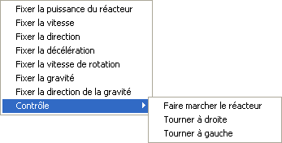 | 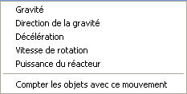 |
Capture d'écran des actions (gauche) et des expressions (droite) qui peuvent être appliquées à une objet contenant un mouvement vaisseau spatial.
| 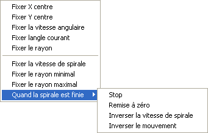 | 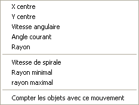 |
Capture d'écran des actions (gauche) et des expressions (droite) qui peuvent être appliquées à un objet contenant un mouvement circulaire.
| 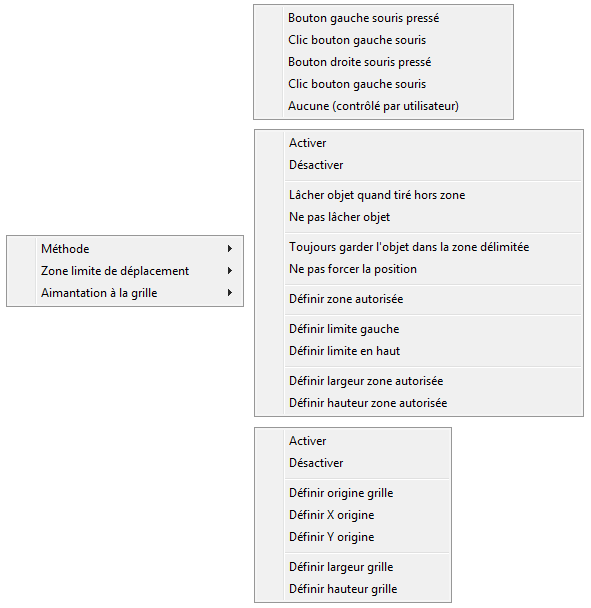 | 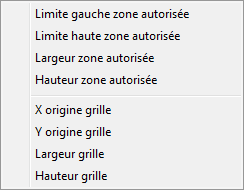 |
Capture d'écran des actions (gauche) et des expressions (droite) qui peuvent être appliquées à un objet contenant un mouvement tirer et lâcher.
| 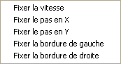 |

|
Capture d'écran des actions (gauche) et des expressions (droite) qui peuvent être appliquées à un objet contenant un mouvement invaders.
Note: à cause d'un bug, l'expression Vitesse renvoie 101 - vitesse, et vous devez passer 101 - vitesse à Fixer Vitesse.
| 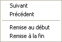 |

|
Capture d'écran des actions (gauche) et des expressions (droite) qui peuvent être appliquées à un objet contenant un mouvement présentation.
| 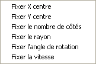 | 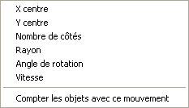 |
Capture d'écran des actions (gauche) et des expressions (droite) qui peuvent être appliquées à un objet contenant un mouvement polygône régulier.
| 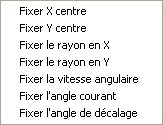 | 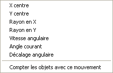 |
Capture d'écran des actions (gauche) et des expressions (droite) qui peuvent être appliquées à un objet contenant un mouvement ellipse simple.
| 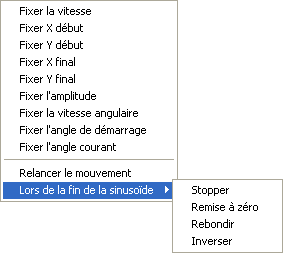 | 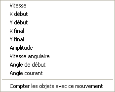 |
Capture d'écran des actions (gauche) et des expressions (droite) qui peuvent être appliquées à un objet contenant un mouvement sinusoïdal.
| 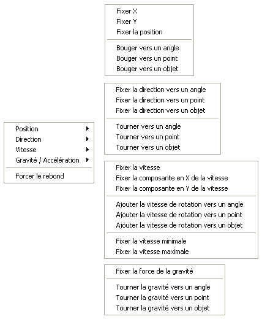 | 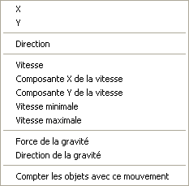 |
Capture d'écran des actions (gauche) et des expressions (droite) qui peuvent être appliquées à un objet contenant un mouvement vecteur.